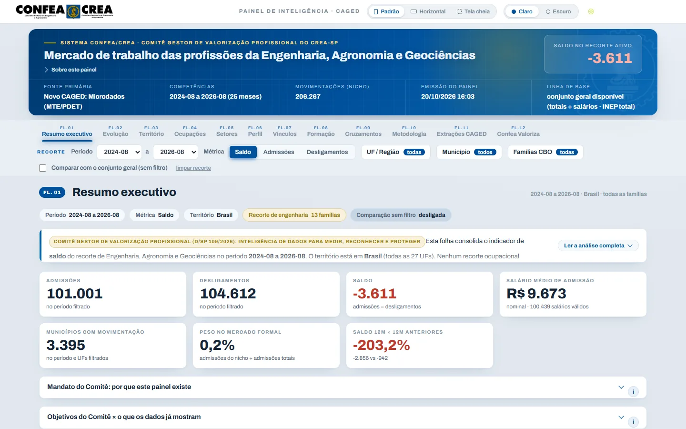
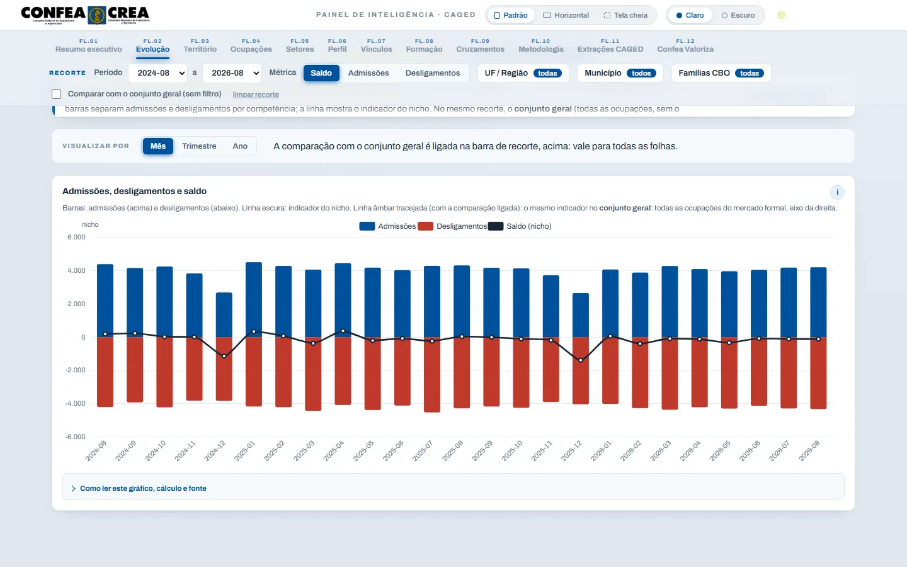
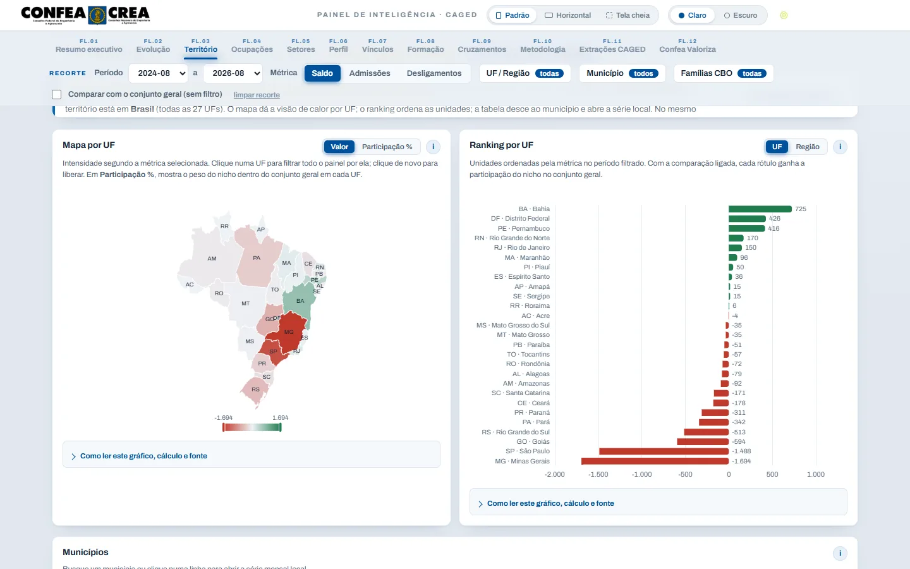
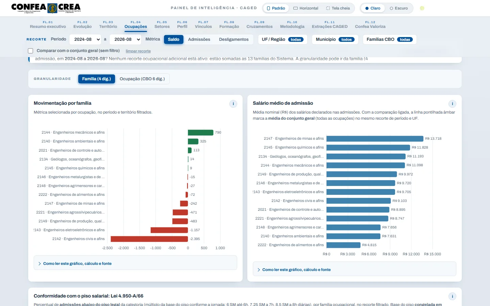
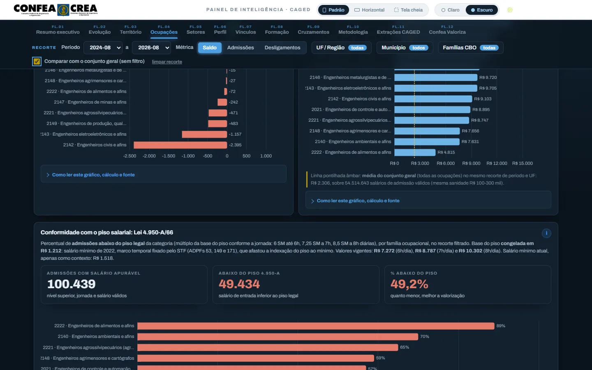
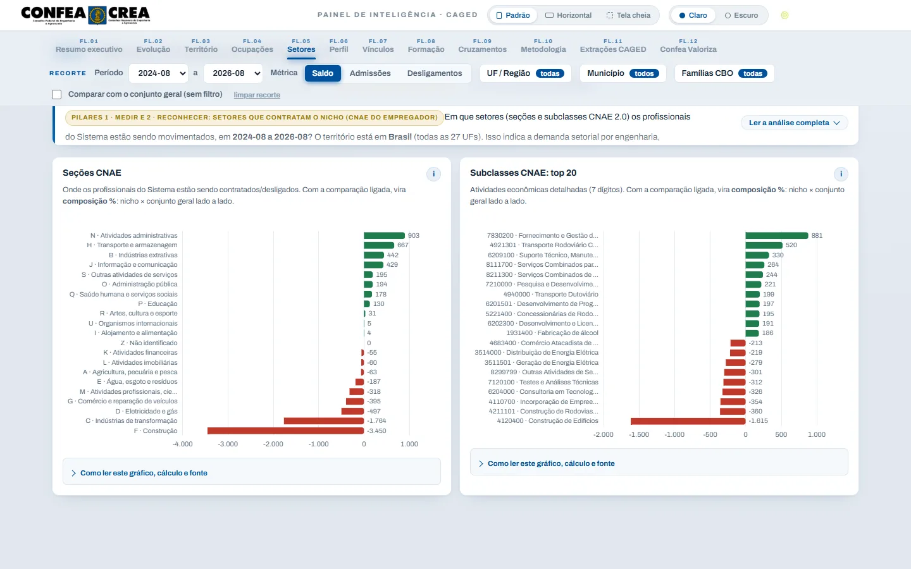
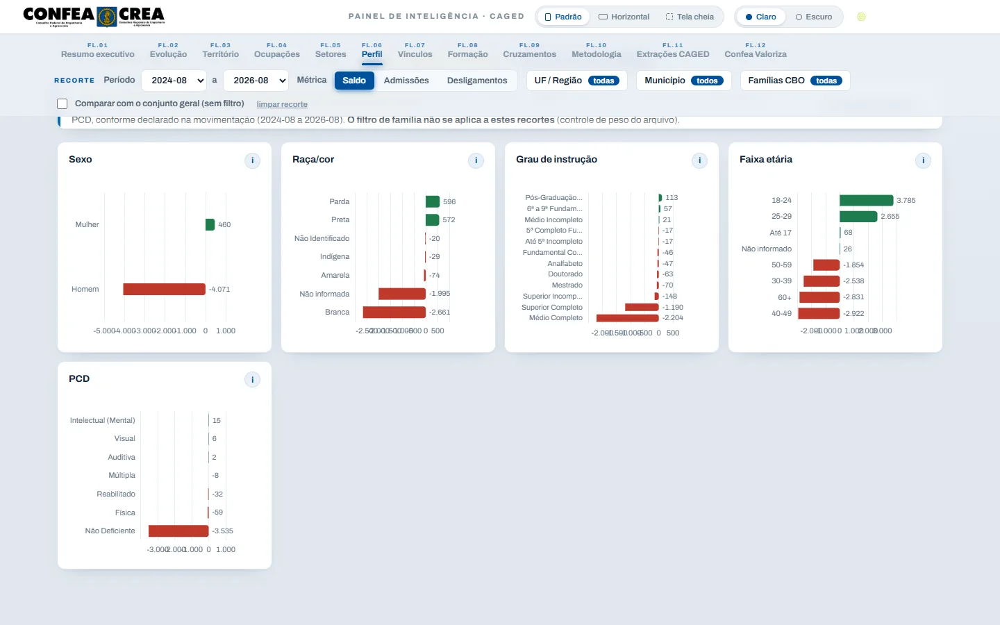
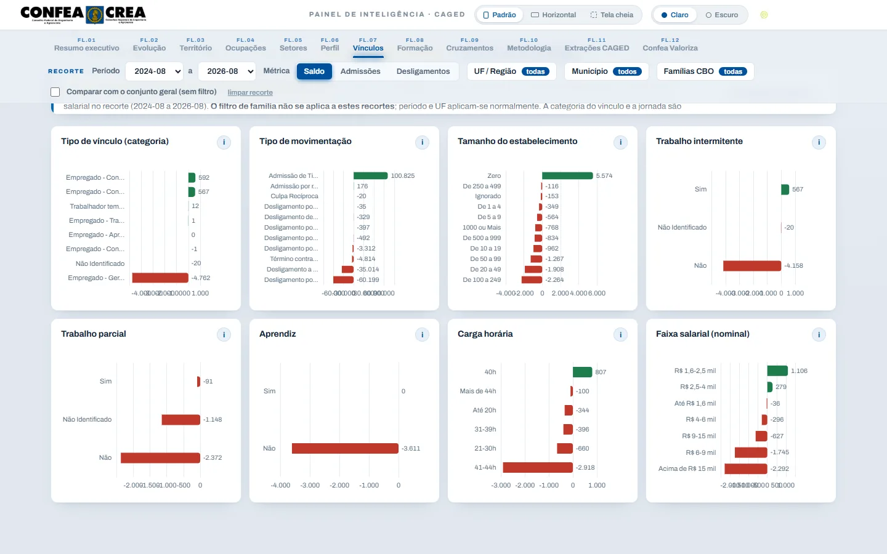
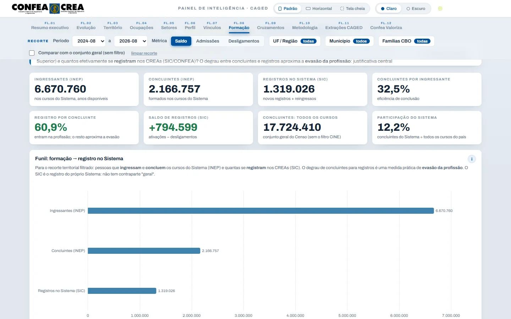
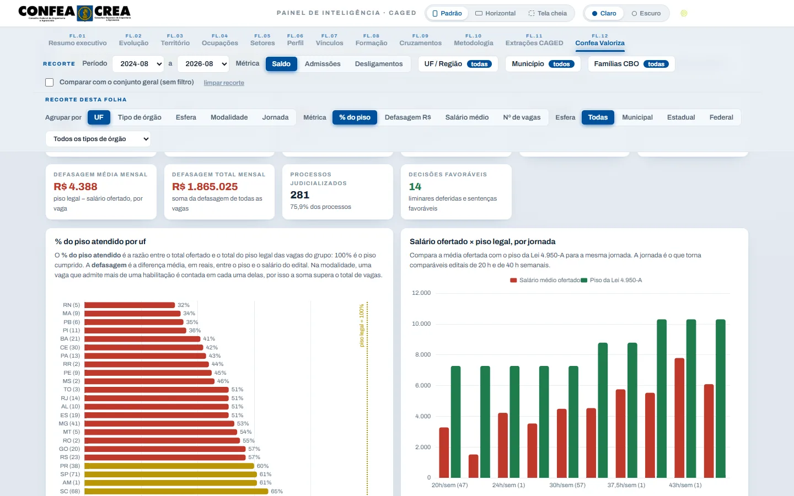

Emprego formal na engenharia
Painel sobre emprego formal e salários nas profissões da engenharia, agronomia e geociências. Cruza o Novo CAGED com o Censo da Educação Superior, os registros do Sistema Confea/Crea e os concursos com salário abaixo do piso legal.
- Instituição
- CONFEA e Crea-SP
- Demanda
- Comitê Gestor de Valorização Profissional do Crea-SP
- Período
- ago/2024 a ago/2026, 25 meses
- Saída
- Painel web de 12 folhas
Telas
Capturas do painel gerado em 20/10/2026.




















Folhas do painel
A opção de comparar com o conjunto geral mostra o mesmo indicador para todas as ocupações do país.
Fontes e etapas
Funcionalidades
- Recorte globalPeríodo, métrica, UF, município e família CBO valem para as 12 folhas.
- Conjunto geralCada indicador pode ser comparado com o total do mercado formal, tabulado no mesmo passo e com o mesmo ajuste.
- Piso legalCompara o salário de admissão com o piso da Lei 4.950-A/66 para a carga horária diária: 6, 7,25 ou 8,5 salários mínimos.
- Leitura guiadaCada gráfico tem botão de explicação com cálculo e fonte, e cada folha tem uma análise em texto.
- Modos de telaPadrão, horizontal e tela cheia, em tema claro ou escuro.
- Guia de extraçãoLinks oficiais dos microdados por mês e passo a passo para abrir os arquivos no Excel e no Python.
Achados
das 100.439 admissões com salário válido ficaram abaixo do piso legal da categoria.
saldo de empregos das 13 famílias de ago/2024 a ago/2026.
dos concluintes dos cursos do Sistema chegam ao registro profissional.
de defasagem média mensal por vaga nos 370 editais de concurso abaixo do piso.
dos 370 processos do Confea Valoriza foram judicializados (75,9%).
das admissões do mercado formal são das 13 famílias de engenharia.
Salário médio de admissão por família
R$ por mês, ago/2024 a ago/2026
Salário nominal declarado na admissão. Fonte: Novo CAGED.
Regras de cálculo
Ajuste oficial
Saldo = declarações no prazo, mais as fora do prazo, menos as exclusões, por mês de movimentação.
Salário válido
Só entram na média salários entre R$ 100 e R$ 300.000.
Piso congelado
Base de R$ 1.212, salário mínimo de 2022, conforme decisão do STF.
Participação
Percentuais usam admissões, nunca o saldo, que pode ser negativo.
Privacidade
Os microdados não identificam pessoa nem empresa; todo cruzamento é agregado.